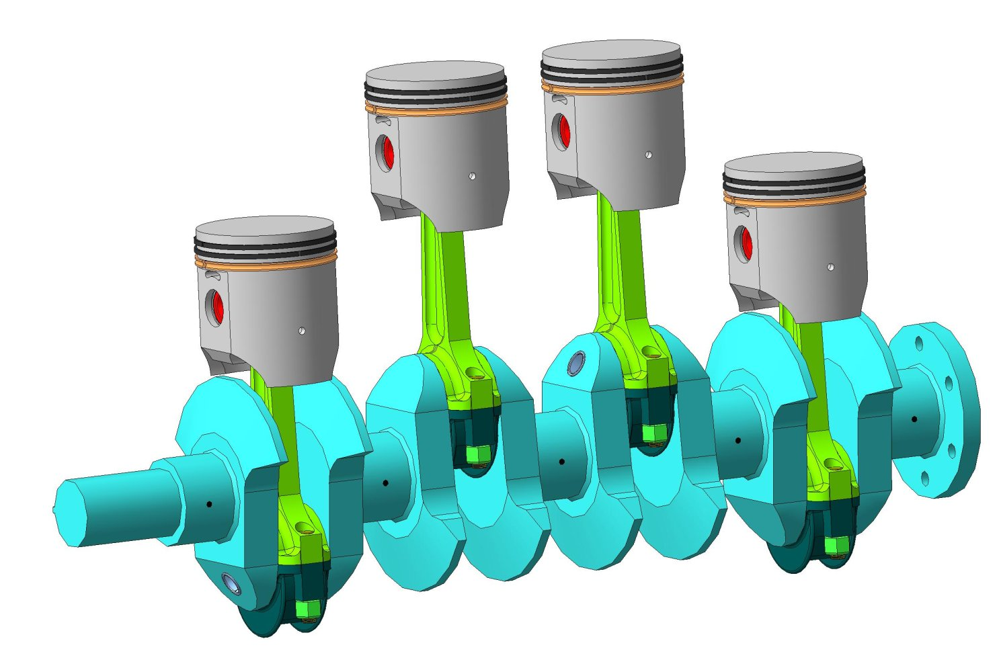

Картер вместе с цилиндрами, головкой (крышкой), поддоном или фундаментной рамой (при ее наличии), прокладками, сальниками образует закрытую, непроницаемую для газов, смазочного материала и охлаждающей жидкости (в случае двигателя жидкостного охлаждения) полость, где расположен кривошипно-шатунный механизм. В современных форсированных двигателях на корпусные детали действуют высокие нагрузки от сил инерции и давления газов в цилиндрах. Кроме того, ряд деталей работает в условиях повышенных температур и значительных температурных напряжений. Детали корпуса являются опорами многих подвижных соединений двигателя, в том числе подшипниковых узлов. Поэтому детали корпуса наряду с прочностью должны обладать высокой жесткостью, последнее относится и к корпусу в целом.
 Криво-шатунный механизм – механизм, служащий для преобразования возвратно-поступательного движения во вращательное, и наоборот. Кривошипно-шатунный механизм состоит из четырех звеньев: стойки, кривошипа, шатуна и поршня. Если ведущим звеном является поршень, то в кривошипно-шатунном механизме происходит преобразование возвратно-поступательного движения во вращательное. Если же ведущим звеном является кривошип, то механизм преобразует вращательное движение кривошипа в возвратно-поступательное движение поршня (механизм поршневого насоса). Основными рабочими компонентами КШМ являются коленчатый вал, поршни с шатунами и маховик.
 Коленчатый вал является сложной по устройству и изготовлению деталью. Он принимает на себя крутящий момент, давление и другие нагрузки, поэтому выполнена из высокопрочной стали или чугуна. Коленвал преобразует возвратно-поступательное движение шатуна во вращение и передает его на трансмиссию. Коленчатый вал состоит из следующих элементов: коренные шейки, шатунные шейки, противовесы, щеки, хвостовик, фланец маховика.
Конструкция коленвала во многом будет зависеть от количества цилиндров в двигателе. В простом рядном четырехцилиндровом двигателе на коленчатом вале имеются четыре шатунных шейки, на которых устанавливаются шатуны с поршнями. Пять коренных шеек расположены по центральной оси вала. Они устанавливаются в опоры блока цилиндров или картера на подшипники скольжения (вкладыши). Сверху коренные шейки закрываются крышками на болтах.
Коленчатый вал является сложной по устройству и изготовлению деталью. Он принимает на себя крутящий момент, давление и другие нагрузки, поэтому выполнена из высокопрочной стали или чугуна. Коленвал преобразует возвратно-поступательное движение шатуна во вращение и передает его на трансмиссию. Коленчатый вал состоит из следующих элементов: коренные шейки, шатунные шейки, противовесы, щеки, хвостовик, фланец маховика.
Конструкция коленвала во многом будет зависеть от количества цилиндров в двигателе. В простом рядном четырехцилиндровом двигателе на коленчатом вале имеются четыре шатунных шейки, на которых устанавливаются шатуны с поршнями. Пять коренных шеек расположены по центральной оси вала. Они устанавливаются в опоры блока цилиндров или картера на подшипники скольжения (вкладыши). Сверху коренные шейки закрываются крышками на болтах.
 Поршень. При рабочем ходе поршень воспринимает и передает через палец (сплошной или полый цилиндрический стержень, служащий для подвижного шарнирного соединения поршня с шатуном) шатуну силу давления газов и, нагреваясь, отводит от них теплоту через кольца в стенки цилиндра. При вспомогательных тактах с помощью поршня создается разрежение в цилиндре для впуска воздуха или горючей смеси, сжимается этот воздух (или смесь) и выталкиваются из цилиндра отработавшие газы. В двухтактных двигателях поршень, кроме того, открывает и закрывает окна газораспределения. Работая в условиях высоких температур и больших давлений, поршень испытывает также значительные нагрузки от сил инерции, вызванные переменной скоростью движения. К тому же трущиеся поверхности поршня и колец нельзя обильно смазывать во избежание попадания масла в камеру сгорания. Изготавливают поршень из легкого, но прочного алюминиевого сплава, обладающего высокой теплопроводностью и небольшим коэффициентом трения.
Поршень. При рабочем ходе поршень воспринимает и передает через палец (сплошной или полый цилиндрический стержень, служащий для подвижного шарнирного соединения поршня с шатуном) шатуну силу давления газов и, нагреваясь, отводит от них теплоту через кольца в стенки цилиндра. При вспомогательных тактах с помощью поршня создается разрежение в цилиндре для впуска воздуха или горючей смеси, сжимается этот воздух (или смесь) и выталкиваются из цилиндра отработавшие газы. В двухтактных двигателях поршень, кроме того, открывает и закрывает окна газораспределения. Работая в условиях высоких температур и больших давлений, поршень испытывает также значительные нагрузки от сил инерции, вызванные переменной скоростью движения. К тому же трущиеся поверхности поршня и колец нельзя обильно смазывать во избежание попадания масла в камеру сгорания. Изготавливают поршень из легкого, но прочного алюминиевого сплава, обладающего высокой теплопроводностью и небольшим коэффициентом трения.
 Маховик. Для накопления энергии в течение рабочего хода, вращения коленчатого вала во время вспомогательных тактов, уменьшения неравномерности вращения вала, сглаживания момента перехода деталей кривошипно-шатунного механизма через мертвые точки, облегчения пуска двигателя и трогания автомобиля с места служит маховик. При пуске двигателя в цилиндрах происходят вспышки рабочей смеси и маховик обеспечивает вращение коленчатого вала от конца рабочего хода в одном цилиндре до его начала в следующем цилиндре в соответствии с порядком работы двигателя. Маховик отливают из серого чугуна; на ободе маховика для увеличения момента инерции располагают основную массу металла. На обод маховика напрессовывают или надевают зубчатый венец, необходимый для вращения коленчатого вала при пуске двигателя стартером. Венец крепят болтами. Поверхность маховика, соприкасающуюся с ведомым диском сцепления, шлифуют и полируют.
Маховик. Для накопления энергии в течение рабочего хода, вращения коленчатого вала во время вспомогательных тактов, уменьшения неравномерности вращения вала, сглаживания момента перехода деталей кривошипно-шатунного механизма через мертвые точки, облегчения пуска двигателя и трогания автомобиля с места служит маховик. При пуске двигателя в цилиндрах происходят вспышки рабочей смеси и маховик обеспечивает вращение коленчатого вала от конца рабочего хода в одном цилиндре до его начала в следующем цилиндре в соответствии с порядком работы двигателя. Маховик отливают из серого чугуна; на ободе маховика для увеличения момента инерции располагают основную массу металла. На обод маховика напрессовывают или надевают зубчатый венец, необходимый для вращения коленчатого вала при пуске двигателя стартером. Венец крепят болтами. Поверхность маховика, соприкасающуюся с ведомым диском сцепления, шлифуют и полируют.
 Газораспределительный механизм. Газораспределительный механизм состоит из клапанов (рис. 10), устанавливаемых в чугунных втулках, запрессованных в головку блока, пружин, соединенных с клапанами при помощи сухариков и тарелок, коромысел с регулировочными болтами, штанг, толкателей и распределительного вала с кулачками. Приводится в действие механизм при помощи распределительных шестерен, передающих вращение распределительному валу от коленчатого вала. Шестерня, установленная на распределительном валу, имеет число зубьев в два раза больше, чем шестерня, укрепленная на коленчатом валу, и поэтому распределительный вал вращается с частотой в 2 раза меньшей, чем частота вращения коленчатого вала. Газораспределительный механизм обеспечивает своевременный впуск в цилиндры свежего заряда горючей смеси и выпуск отработавших газов.
Газораспределительный механизм. Газораспределительный механизм состоит из клапанов (рис. 10), устанавливаемых в чугунных втулках, запрессованных в головку блока, пружин, соединенных с клапанами при помощи сухариков и тарелок, коромысел с регулировочными болтами, штанг, толкателей и распределительного вала с кулачками. Приводится в действие механизм при помощи распределительных шестерен, передающих вращение распределительному валу от коленчатого вала. Шестерня, установленная на распределительном валу, имеет число зубьев в два раза больше, чем шестерня, укрепленная на коленчатом валу, и поэтому распределительный вал вращается с частотой в 2 раза меньшей, чем частота вращения коленчатого вала. Газораспределительный механизм обеспечивает своевременный впуск в цилиндры свежего заряда горючей смеси и выпуск отработавших газов.